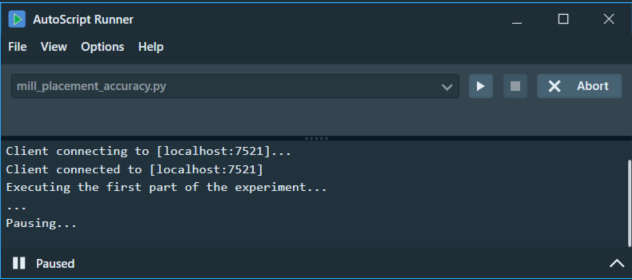
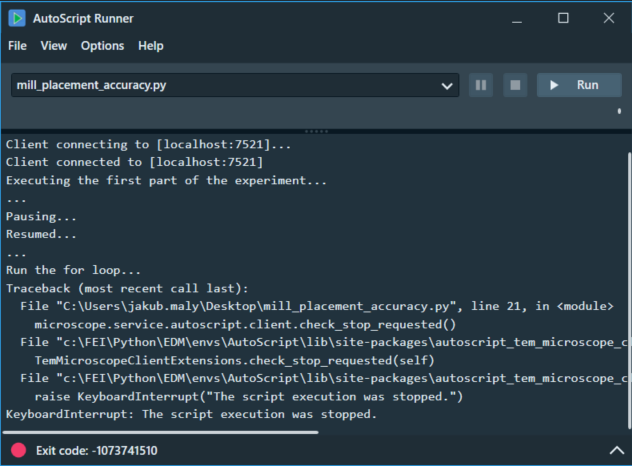

AutoScript allows you to pause or stop script execution at a specific script line. This gives the user the ability to pause the script before a critical moment occurs and check the state of the microscope to ensure that the experiment is running as expected. In addition, the script execution can be gracefully stopped in a controlled manner when it is safe to do so for data consistency and/or the condition of the microscope.
Two actions are required for the pause/stop functionality to work:
There is a function for both pausing and stopping the script on a specific line. To perform the desired action, call the selected function from within the script.
# Check if a pause has been requested, if so pause the script execution
microscope.service.autoscript.client.check_pause_requested()
# Check if a stop has been requested, if so gracefully stop the script execution
microscope.service.autoscript.client.check_stop_requested()
The second action to take is to request a pause or stop of the script execution. If only the API function is called, but no request is made, the script execution is not affected in any way. The request can be made by clicking the appropriate button in either the AutoScript Runner or the PyCharm editor (see their manuals, section "Pause/Stop requests").
Scenario - We want to run an experiment on the microscope. Perform the first part of the experiment on the microscope and then pause the script to inspect the state of the microscope. Then resume execution and proceed to the second part of the experiment where we define stop_condition. If the stop_condition becomes True (for example microscope.optics.intensity == 0.0) the script execution gracefully stops.
First we prepare the script:
from autoscript_tem_microscope_client import TemMicroscopeClient
from autoscript_tem_microscope_client.enumerations import CameraType
microscope = TemMicroscopeClient()
microscope.connect("localhost")
# Perform the first half of the experiment
# ...
# Pause the script if a pause is requested and check the state of the microscope or the intermediate results of the experiment
microscope.service.autoscript.client.check_pause_requested()
# Resume the script execution and perform the second part of the experiment
# ...
for i in range 10:
# Gracefully stop the execution if the tool gets to the state where the stop_condition is True and a stop is requested
if (microscope.optics.intensity == 0.0):
microscope.service.autoscript.client.check_stop_requested()
# Continue the experiment if the stop_condition was not met
microscope.acquisition.acquire_camera_image(CameraType.BM_CETA,1024,1)
Then we choose either AutoScript Runner or PyCharm editor to run the script so we can create the pause/stop requests. In our example, we use Runner to run the script and then click on request pause button. Once the script execution encounters the check_pause_requested() line, the script will be paused as shown in the screenshot below.

Once paused, the script can be resumed by clicking the Resume button or stopped by clicking the Abort button. We resume the script and then click the request stop button to make our script stop when the stop_condition is met.
If the microscope.optics.intensity == 0.0 in any iteration of the for loop and a stop is requested, the script execution is automatically stopped by throwing the KeyboardInterrupt exception.

There are two other auxiliary functions that provide information about whether a particular action is currently requested. The following functions return a boolean value and have no effect on the script execution.
# Returns True if pause is requested, False otherwise
microscope.service.autoscript.client.is_pause_requested
# Returns True if stop is requested, False otherwise
microscope.service.autoscript.client.is_stop_requested
These additional functions can be used, for example, when the script execution is too fast and there is not enough time to create a pause/stop request.
import time
# Sleep until pause is requested
while not microscope.service.autoscript.client.is_pause_requested:
time.sleep(0.1)
# Once the pause is requested, the loop is terminated and the script execution can be paused
microscope.service.autoscript.client.check_pause_requested()
In the current state, the start/stop functionality only works if the user actively creates the requests. Without the requests, the API functions have no effect on the script execution. This in turn means that if we do not need to stop or pause the script at some point, the script does not need to be modified. If the requests are not created, the script will execute exactly as if the API functions were not called.
For example, the user can insert multiple check_pause_requested() lines into a script, but pause only at selected places (or not at all) on each run, as needed.